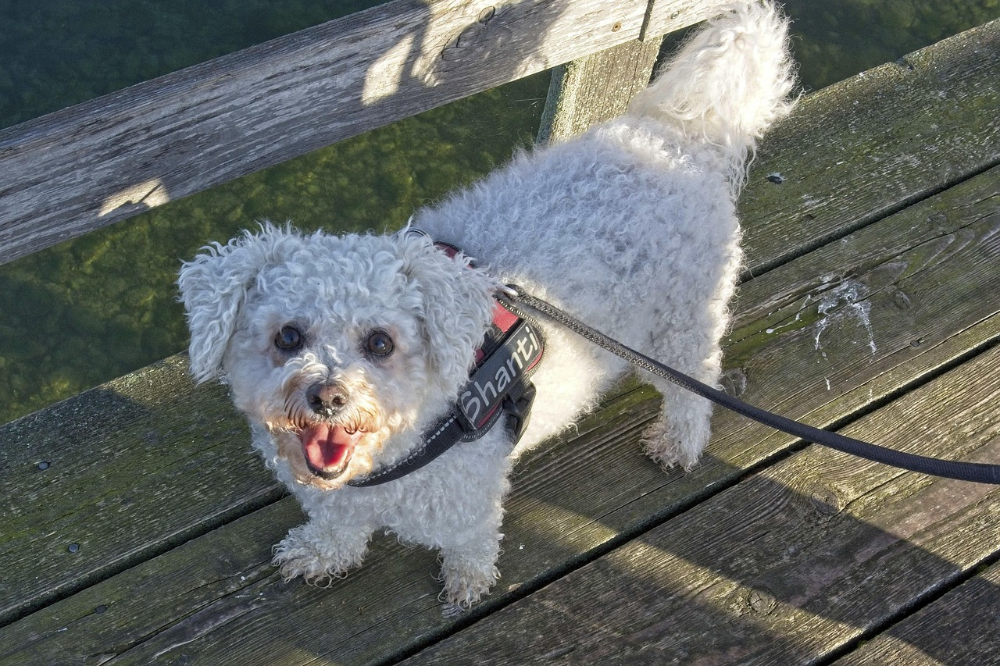

 |
El bichón frisé es un perro peludo e inquieto, no demasiado deportista, que tiene el adorable aspecto de un peluche. Sin embargo, esta raza ofrece mucho más que un aspecto agradable. Su actitud alegre y curiosa se ganará el corazón de todo el mundo. Y puedes tener por seguro que un bichón fris é nunca se cansa de ser el centro de atención. |